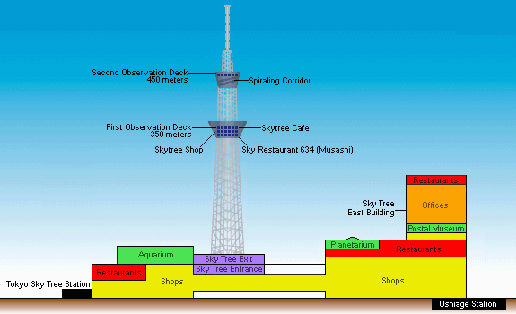
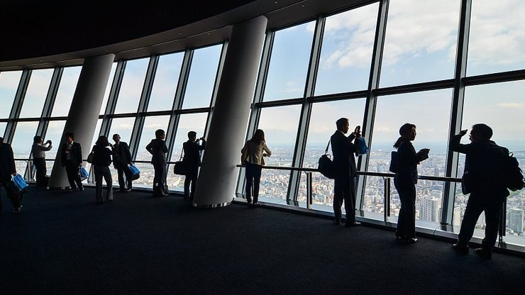
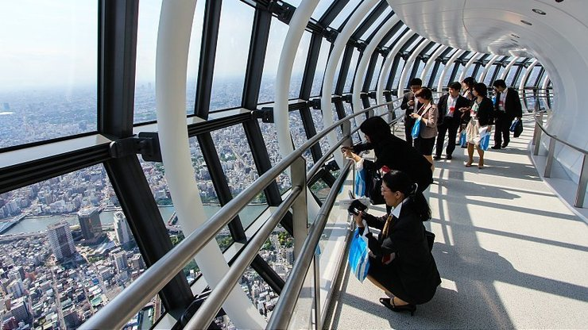

Tokyo Skytree
東京スカイツリー

The Tokyo Skytree (東京スカイツリー) is a television broadcasting tower and landmark of Tokyo. It is the centerpiece of the Tokyo Skytree Town in the Sumida City Ward, not far away from Asakusa. With a height of 634 meters (634 can be read as "Musashi", a historic name of the Tokyo Region), it is the tallest structure in Japan and was the second tallest in the world at the time of its completion. A large shopping complex with an aquarium is located at its base.
The highlight of the Tokyo Skytree is its two observation decks which offer spectacular views out over Tokyo. The two enclosed decks are located at heights of 350 and 450 meters respectively, making them the highest observation decks in Japan.
Tembo Deck, the lower of the two decks is 350 meters high and spans three levels with great views from all of its floors. The top floor features tall, broad windows that offer some of the best 360 degree panoramic views of the city. The middle floor has a souvenir shop and the Musashi Sky Restaurant, which serves French-Japanese fusion cuisine, while the lowest floor features a cafe and some glass panels on the ground for a vertical look downwards.
A second set of elevators connects the Tembo Deck to the 450 meter high Tembo Galleria. Dubbed "the world's highest skywalk", the Tembo Galleria consists of a sloping spiral ramp that gains height as it circles the tower. The construction of the steel and glass tube allows visitors to look down from the dizzying height of the tower and out over the Kanto Region.
At the top of the spiral ramp is a more conventional observation deck floor with lounging areas and tall windows from which to look out over Tokyo. This floor is officially located at 451.2 meters and constitutes the highest point of the observation decks.
A visit to the Tokyo Skytree starts on the 4th floor where the tickets for the first observation deck (but not for the second deck) are sold. A fast and smooth elevator ride takes visitors to the top floor of the first observation deck where tickets for the second observation deck can be purchased. Visitors then access the second deck before descending back to the first observatory where they board the elevator down to the tower's exit on the 5th floor.
